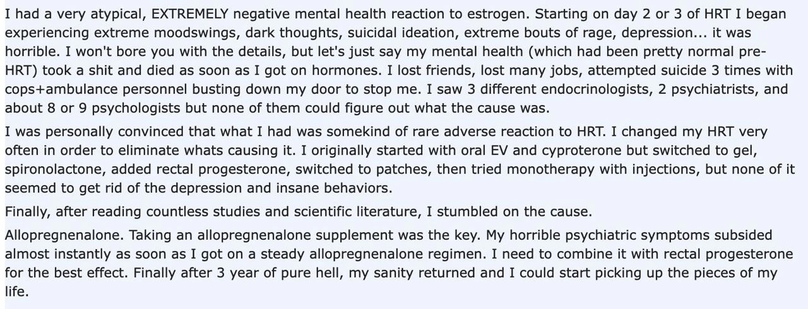

Расстройства идентичности 2 – Monster Girl Encyclopedia
Пост является продолжением моего предыдущего исследования о расстройствах идентичности. Читать его сначала – обязательно.
Иногда ты “застреваешь” на креативно-исследовательской проблеме так, что не можешь заниматься ей непосредственно. Ты кладешь ее на антресоль на “саморешение”, подкармливаешь случайной информацией, ждешь, пока она ферментируется. Читаешь разное, играешь в игры, разговариваешь с людьми, пока проблема смотрит из подсознания, впитывает, следит; дергая за ниточки, направляет тебя в те места, где ты можешь найти решение.
Пространства, связанные с трансгендерами, нейроотличиями и диссоциативными расстройствами –перескаются, и на их пересечении можно найти много интересного. Я уже повидала “therians”/”otherkins” –людей, которые считают, что должны быть другого биологического вида. Их дисфория такая же, что гендерная, и они даже могут чувствовать фантомные “хвосты” и другие части тела, не идущие в поставке гомо сапиенс. Сейчас для меня это уже не удивительное наблюдение, а самоочевидный факт –да, оно так работает. Дисфория может быть завязана на гендер, может на инвалидность, а может и на биологический вид.
У многих, на это жалующихся, также есть диссоциативное расстройство идентичности (DID), и животным/инвалидом является только один “альтер”; дисфория и фантомные ощущения проявляются, только когда этот альтер “на фронте” за рулем тела. Но есть и те, у которых животным является единственная личность (“синглет”). Среди них гуляет поверье, что они были этим животным в прошлой жизни и реинкарнировались в человека. С учетом того, как они себя чувствуют –это, справедливости ради, довольно логичное умозаключение. Попытки спрашивать, в каком возрасте они осознали себя животным, всякий раз уходят в одно и то же – “с рождения”/”настолько себя помню”. Что совершенно не помогает понять этиологию.
Поэтому когда транс-девочка из чата призналась, что является азеркином-Холставром (ссылка 18+), решаемая моим подсознанием проблема моментально вышла, так сказать, на фронт. Даже если она всерьез считает, что в прошлой жизни была хентайной фентези-расой, она всяко же не может утверждать, что считала себя такой до появления монстродевочек в медиа-пространстве?
Быстрый опрос подтвердил, что да, она всерьез, она испытывает дисфорию, может описать фантомный хвостик, и считает себя реинкарнацией холставра. Потребовалось не так много давления, чтобы она призналась – нет, она считала себя такой не всегда. Осознание, что она Холставр, пришло к ней, как только она начала феминизирующую гормональную терапию.
И тут у меня над головой возникла фантомная лампочка.
Я собрала трех транс-девушек и трех транс-парней с BID, которые согласились поделиться своей историей; все истории приведены с разрешения, но анонимизированы и сокращены до самого нужного.
Экспонат А. Транс-девушка. Продиагностированное DID. Три личности, все три женского пола, все три с BID, хотя не согласны, что и до какой степени хотят себе отрезать. Первая “схизма” произошла в детстве на фоне серьезных травм, вторая – сразу после начала феминизирующей терапии. Ранние воспоминания о нелюбви к своим конечностям были до первой схизмы, но именно после гормонов сформировалось полное понимание диагноза BID.
Цитаты:
[T]he first schism occurred as a side effect of, for a lack of a better way to describe it, the mental stress of exorcism ritual practices. One half declared the other a demonic possession and mentally locked her away for years before our wife discovered who she really was. By that point, the stress of suppressing a schism coupled with the mental torture we were enduring at the hands of a man who was literally the joker irl, except he had nature tattoos and he preferred his fists over guns, a second schism event occurred, and by that point, we were experienced with DID and schism events, so our wife identified it quickly.
We may get [an orchiectomy], but it's unlikely as we're leaning towards non op because one of us very much wants to keep everything and the other two of us don't want to put her through losing it.
The stress of being misgendered can cause a temporary schism to form, and when you transition and become the person you wanted to be from the beginning, you usually merge with the schism during transition.
Our earliest memories of not wanting our arms and feeling uncomfortable with their presence we're at 4 years old. This was years before our first schism event. Our leg BIID developed around the same time as the first schism event. Our wife was the one who finally made us aware of the condition, as we were very deep into denial for a long time.
Экспонат Б. Транс-девушка. Травмы в детстве, подозрение на DID, но без диагноза и конкретики. Боязнь инвалидности перешла в акротомофилию. Про BID знала, но говорила, что это не про нее, мол, “просто фетишист”. Осознание себя транс-девушкой и социальный переход произошли без эксцессов, но после начала феминизирующей терапии пробудился BID, и теперь от конечностей ее дисфорит посильнее, чем от гендера.
Цитаты:
I spent my childhood years very much terrified of disability. I read a magazine issue about how amputees live and I heard of stephen hawking and in school my teacher told me a story about a guy hitting his head and going blind and so on
I was scared that I will be disabled one day, and I thought disability lives to not be worth living
This give me an anxiety disorder and a disability fetish. Funny that
Amputee hentai was my escape [from] reality, I got really into it. I heard of BID but I always thought that I'm just a perv
I realized I was trans because I was always making myself the woman in my sex fantasies. And as a woman I was also disabled most of the time, but I didn't realize the same about BID until I got on hormones and reexamined my dysphoria
I got worse on hormones, really. I realized I need to be a quad, and my quad dysphoria is so so so so much harder to deal with than gender dysphoria
Экспонат В. Транс-девушка. Была заинтересована в ампутантах всегда, частично как акротомофил, частично просто как “мрачное любопытство”. Знала, что транс, с подросткового возраста, но феминизирующие гормоны начала принимать сильно позже. Вскоре после этого наткнулась на эротическую картинку девушки без конечностей и осознала, что хочет быть ей, что это ее идеальное тело. Долго боролась с этими чувствами и отрицала, но потом поняла и признала, что это настоящий BIID.
I remember sharing a picture of a quad girl I thought was really beautiful. When I said “This is my ideal body, this is who I really am on the inside.” I felt a sensation akin to when one discovers their gender identity. It was intense, and it was very pleasant. It felt like I had found out something deep about myself
But truth be told, I always thought amputees were… curious, I had a morbid interest in them
Not strong enough to seek them out, but whenever I saw them, I'd turn my head and kind of stare
There was this woman that lives nearby, she is a triple amputee
And she caught my eye, going through the street with a powered wheelchair
I liked DBE/DBK too, and that was exclusively through NSFW content
Moving into DSD/DHD was almost entirely aesthetic preference
And at some other points, I pondered just going DAK
Because it feels like a compromise
But after getting to know what BIID was, that's when it solidified in my mind that I wanted DSD/DHD
(DBE, DBK, DAK, DSD, DHD – разные виды ампутаций)
Экспонат Э. Транс-парень. Асексуал, но всегда был так или иначе заинтересован в инвалидностях, читал про них в интернете, “играл в инвалида” с другими детьми (я не спрашивала, как это выглядело). После полового созревания начал испытывать сильный дискорфорт к своему телу, начал экспериментировать с презентацией и остановился на маскулинной. Начал маскулинизирующую терапию подростком, но полное осознание BID к нему пришло плавно в более позднем возрасте.
I think i became aware of BID as a concept around the same time as i found out about transness. I was very online at the time and already quite interested in disability related topics. I didn't apply the label to myself though since I was like terminally unaware of my own feelings for the most part but I did tend to give characters in my daydreams the disabilities I was dysphoric about. I also played “disabilities” a lot as a kid with one or two friends who seemed to be into it too. Covid lockdown was when i initially started thinking that i might actually have BID but i was trying to repress it really hard. I didn't think I was upset enough about my body for that but I kept thinking about it. Kind of funny in hindsight how many people realized they're trans during lockdown but i unlocked a second dysphoria.
(me): So, around the time that you started HRT, did your sentiment about BIID/disability change? Did the dysphoria become stronger or weaker or in any other way different?
(me): Did the testosterone affect it in any way?
(him): I was still deep in denial about my bid when i started T so i dont quite remember. I was still having my daydream disability stuff. It definitely took a while for things to change but i probably started taking my bid more seriously after my body changed a fair bit due to t since I was less focused on the gender things that were “wrong”. Like not having as many gender dysphoria issues meant i wasn't as distracted from my bid anymore so it got stronger. If you know what i mean?
Экспонат Ю. Транс-парень. После полового созревания внезапно начал испытывать сильный дискорморт и стыд. Начал ролеплеить парней, понял, что быть парнем ему легче. Опыт с инвалидностью был смешанным – его отец был инвалидом, один из ролеплейных персонажей был в инвалидном кресле, и ему самому временно приходилось пользоваться инвалидным креслом – по итогам всего этого ассоциировал инвалидность с глубочайшим стыдом. Осознал DID и BIID примерно одновременно после сильного потрясения. Гормональной терапии не принимал.
I was always very feminine, and very girl… until puberty, where everything made me super uncomfortable. Everything about my body felt bad, wrong, shameful… even though I was growing up to look like the Disney Princesses and Barbie/Monster High characters I loved. It was confusing… and then I started roleplaying as a guy- I didn't say I was one, but the characters I would rp as were guys. I felt like I was hiding this huge secret, but to have people assume I was a guy was… genuinely something that made me happier than happy. And I realized, oh yeah, it's probably because I'm not a woman!
During my later years (fourteen, fifteen) I met someone else who I would roleplay with, and I showed off my first physically disabled character; they told me that people in wheelchairs freaked them out. I started to associate that with shame, especially since my father was starting to need his cane and wheelchair, and people were mega ableist towards him. And my own physical condition was constantly declining; my first time using a wheelchair (in middle school) was forced on me. It was shameful because I was out of breath; I needed an inhaler, but everyone just told me it was because I was out of shape (read: fat). It was just… shame, shame, shame.
Eventually, I found out I was plural after a bad breakup; before then, I'd noticed my memory felt physically inaccessible to me- and then someone in my head just forced memories back onto me and I almost blacked out. In the headspace, it wore an eyepatch- and I started to get the intense need to only have one eye. This was the first time I really noticed my BID. I started carrying an eyepatch in my backpack just to lessen that.
I didn't know I was ever really experiencing dysphoria until the euphoria showed me how I could feel, I suppose; my first time using a wheelchair because I needed to, I felt euphoric. My first time having hearing difficulty? Euphoric. My poor vision? Euphoric.
Экспонат Я. Транс-парень, осознал гендер в районе 13 лет после созревания, DID в районе 14, BID в районе 18, гормональная терапия сильно позже. При этом BID страдает не вся система, а только одна личность (“Эш”). Про этот диагноз он узнал, когда пытался помочь Эшу и разобраться, почему он так сильно ненавидит свою руку – как только ему сказали, что BID существует, он сразу понял, что речь именно о нем.
we had an alter who showed up (Ash) who seemed to be symptom holding BID and he was incredibly distressed by our limb
As a child our BID was milder, but over more things (our eye and legs below the knees along with our right hand) but the hand did seem to be the main thing then as we got older the others seemed to fade away, now we occasionally get mild fleeting thoughts but nothing we intend to act on, not like our hand
Yes after puberty, we were really dissociated and our health mentally and physically did a huge drop once we hit puberty but it had worsened our dysphoria, we were already dressing masc by then and then ended up learning about trans people at 14 after searching why we felt like a boy lolol.
Эти конкретные истории, плюс много косвенных обрывков и репортов людей, не дававших разрешение их упоминать, указывают на очень четкий паттерн в отношении к BID у трансов обоих гендеров. У транс-девушек проблемы начинаются, когда они начинают гормональную терапию; момент полового созревания никто значимым не считает. У транс-парней проблемы начинаются при половом созревании; начало гормональной терапии ничего не меняет.
Иными словами, расстройства идентичности пробуждаются, когда в организм поступает эстрадиол.
В стандартном понимании диссоциативных расстройств, они возникают в результате травмы, обычно детской. В попытке защитить себя от травмирующего опыта, психика абстрагируется от него, забывает или подменяет на мир фантазий. Если травма произошла достаточно рано, до того, как у ребенка сформировалась целостная личность, то мы называем это DID – личность так и не собирается в единое целое, оставаясь набором абстрагированных друг от друга аспектов. Погружение в очень реалистичные и глубокие фантазии – стандартный способ диссоциации. И, судя по всему, содержание этих фантазий и доформирует недоформированную личность – у многих пациентов с DID “альтеры” принимают форму персонажей из тех самых детских фантазий, и держатся за эту идентичность вплоть до дисфории.
Не мне же одной напрашивается мысль, что расстройства идентичности и дисфория у “синглетов” без DID тоже обусловлены этим же механизмом? У ребенка в раннем возрасте формируется идентичность, и при обычном развитии событий он идентифицируется с тем, чем является в реальности. Но если ребенок погружается в фантазии – например, потому что в реальности творится жесть, и надо избегать травмы – то единственная идентичность может быть сформирована на основе этих фантазий. Если родившийся мальчиком в своих фантазиях девочка – то идентичность будет женского пола, и мы назовем ее транс-девочкой. Если ребенок увлекся темой инвалидности или погрузился в акротомофилические сексуальные фантазии – то в его идентичности может быть инвалидность. Если в детстве представлял себя собакой – будет азеркином-собакой.
Будет ли ребенок, читавший энциклопедию монстродевочек ради избегания реальности, мнить себя холставром? Я так и не выяснила возраст той бедняги, и я не могу проверить, в каком самом раннем возрасте она могла это читать. Но ее идентичность холставра полностью сформировалась только после приема эстрадиола, равно как и идентичность инвалида у многих BIDшников. Эстрадиол заставляет какие-то ранние нечеткие ошметки расстройства идентичности “кристаллизоваться” во что-то настоящее.
Когда я начала принимать эстрадиол, у меня проснулось много застарелой травмы. Воспоминания и чувства, ранее вытесняемые и подавляемые, накинулись на меня одним разом. 0/10, не рекомендую. Видимо, этот же процесс заставляет всплыть на поверхность подавленные идентичности? Детские порнофантазии с инвалидами превращаются в полноценный BID?
Но интересно вот что. Моя спираль в травматичное прошлое началась очень быстро после начала приема таблеток эстрадиола – в течение… часов? суток? Эстрадиол это стероидный гормон – он связывается почти исключительно с ядерными рецепторами, которые регулируют экспрессию ДНК. Изменения в экспрессии ДНК так быстро проявиться не могут. Облучение радиацией превращает ДНК в кашу, но симптомов лучевой болезни все равно ждать неделю.
Быстрые эффекты гормональной терапии на самочувствие эндокринологи в местном чате списывают на психологию и самовнушение – мол, вы рады наконец-то начать переход, так что вот то да се. Но в ответ на это у меня есть секретное оружие! Поначалу я начала принимать эстрадиол в виде геля, и да, я психологически была рада начать переход и я ждала больших изменений, но ничего со мной не было, даже обидно. На анализе крови мой эндокринолог увидела, что мой эстрадиол вырос незначительно, видимо “шкура толстая” и гель не работает. Она пересадила меня на таблетки, и после первой же дозы началось. Если бы это началось было обусловлено только психологией – оно бы началось еще при геле.
Это сразу и очень резко сужает круг поиска. Не-геномных эффектов у эстрадиола очень мало. В прошлом посте я упомянула, что эстрадиол “нормализует” работу NMDA-рецепторов – но в тех работах, из которых я это взяла (тык, тык, тык) – это все геномные эффекты, долгосрочные. Кроме того, эксперименты заключались в овариэктомии самок крыс – то бишь прекращении эстрадиола и исследовании последствий. Я пробовала брать долгие перерывы в гормональной терапии, и ничего с моей идентичностью и травмами не стало; эстрадиол их пробудил, но отмена эстрадиола их не спрятала обратно. Какой бы здесь ни был эффект, это не те дроиды, которых мы ищем. Нас интересует только один рецептор, мембранный – GPER1.
Что делает GPER1? Много что… очень общего назначения рецептор, надо сказать; это тот момент, когда я особенно сильно чувствую, что я не настоящий врач, а стетоскоп на стройке нашла. У меня было несколько возможных путей для исследования и я надеялась, что хотя бы один даст что-то, что я смогу триумфально вписать как ответ на загадку, но половина оказались красными селедками, а на другой половине я стопорюсь ввиду слабой матчасти. Поэтому уверенности в ответе у меня нет.
Но пока что самым подозрительным виновником является ось HPA, которая регулирует реакцию организма на стресс и активацию реакции “бей или беги”, то бишь именно то, что составляет суть пост-травматического стрессового расстройства.
GPER1 напрямую ее регулирует, причем на коротких промежутках времени. Это взаимодействие GPER1 и HPA “ модулируется” аллопрегнанолоном. “Модулируется” это в нейрологии слово-джокер, которое принимает то значение, которое нужно для справедливости утверждения, но по итогу суть в том, что аллопрегнанолон защищает HPA от некоторых вредоносных эффектов эстрадиола. И хронический стресс приводит к пониженным уровням аллопрегнанолона, что называют частью психопатологии ПТСР. При тестостероновом метаболизме это не особо важно, но при добавлении в организм эстрадиола при хронически низком аллопрегнанолоне, вероятно, внезапная нагрузка на HPA приводит к активации всех стрессовых реакций.
Мне даже удалось найти на Реддите комментарий транс-девушки, которая отчитывается об ухудшении состояния на эстрадиоле, которое прошло, когда ей добавили аллопрегнанолон! Возможно, это оно, она нашла те же научные статьи, что я?

Можно ли вылечить мой текущий ПТСР аллопрегнанолоном и вернуться в нормальное состояние? Можно ли вылечить BID и другие расстройства идентичности, возникшие после приема эстрадиола, аллопрегнанолоном?
Я не могу проверить. Аллопрегнанолона в свободной продаже нет, судя по всему, он ставится только капельницами. Я пробовала принимать прогестерон, который по идее в организме должен перерабатываться в аллопрегнанолон, но это не помогло. Может, его просто было мало, его надо принимать больше, есть пачками? Я не знаю, как посчитать правильную дозу, я не настоящий биохимик, я не уверена, что оно вообще так работает, и я не знаю, какие могут быть побочные эффекты от таких доз.
(и почему прогестерон транс-девушкам прописывают не сразу, а через год-два? в клинических рекомендациях это есть, но ни одного реального обоснования этому я не видела)
Но здесь есть о чем подумать. Кто разбирается и может дать больше наводок – буду рада услышать. Если кто-то из читателей планирует впервые начать феминизирующую гормональную терапию – напишите мне, это повод для экспериментов.
 Ответить по почте
Ответить по почте Оставить анонимный комментарий
Оставить анонимный комментарий